2 Dec 2008, Imperial Sand Dunes, CA
The landscape today was surreal. The stone is dark reddish brown & there is very little vegetation, so it looks like Mars. Then this afternoon I hit the Imperial Sand Dunes, which are also quite a sight.
Unfortunately I missed talking to another cyclist who passed me going east. I had pulled a ways off the road for lunch & by the time I saw him, he was passing me. He didn't hear me call out either.
This afternoon I started thinking back on different parts of the trip, and some things just seem like they happened in another lifetime. For some reason that kinda left me feeling down—with a sense of loss. I can't say why . . .
I am excited to finish up & get back to normal life, but I'm not rushing to be done. I guess I'm just content to be where I am right now.
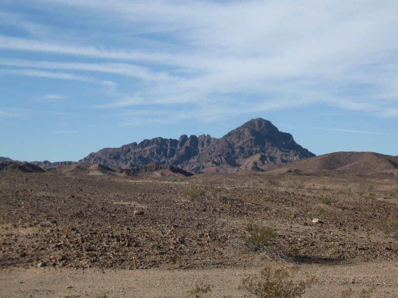
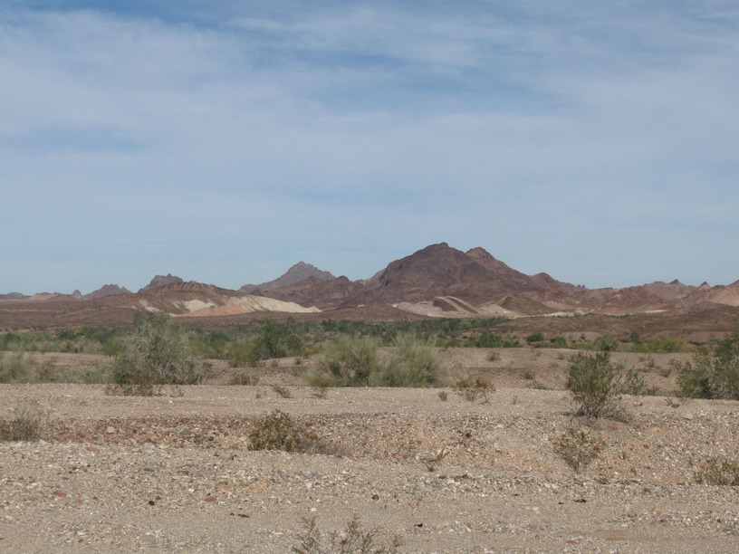
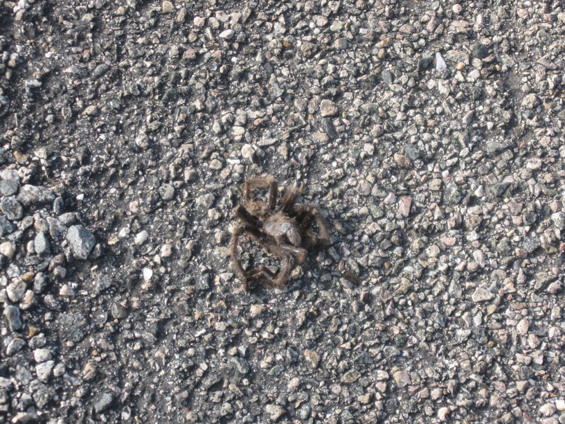
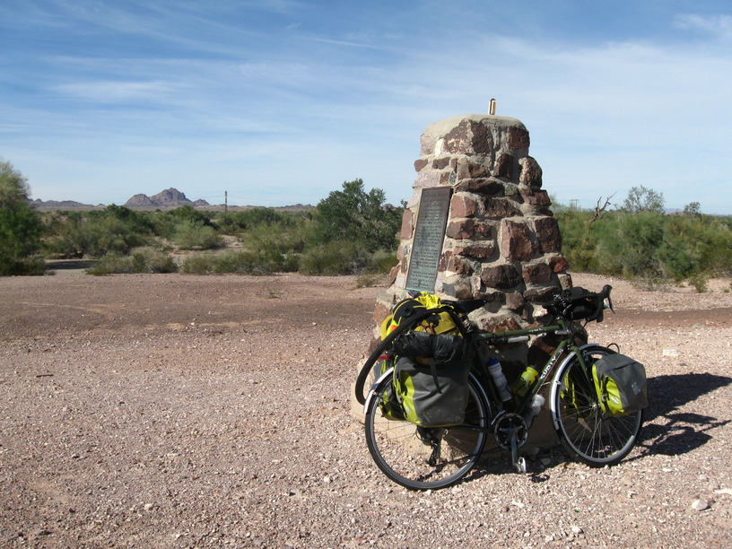
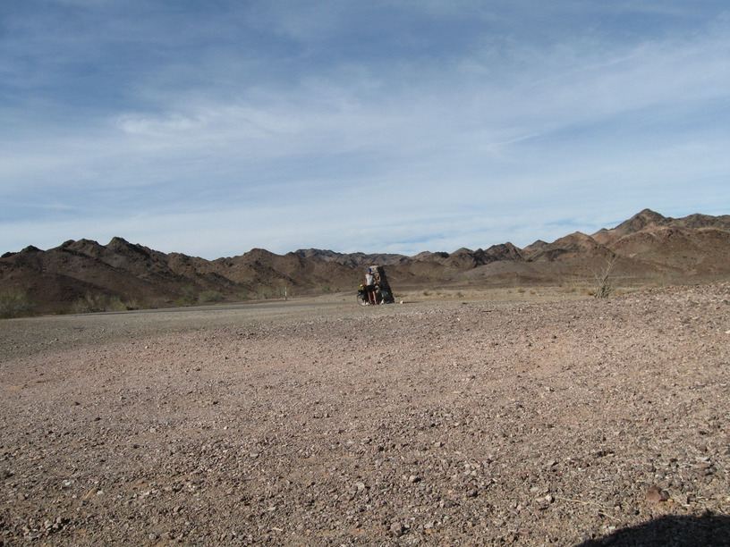
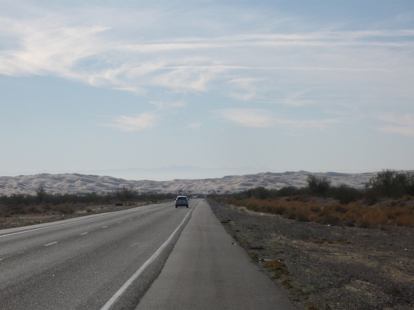
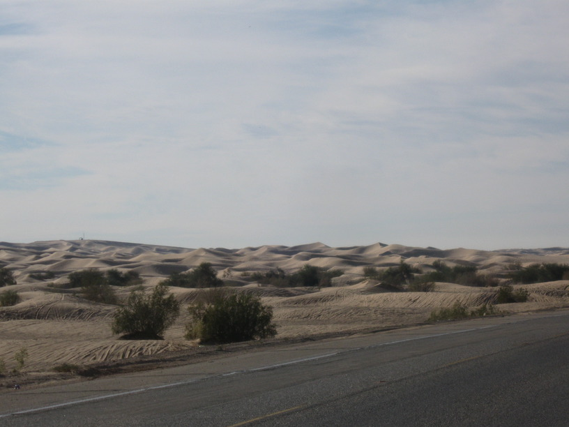
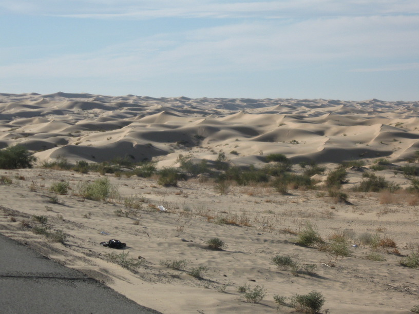
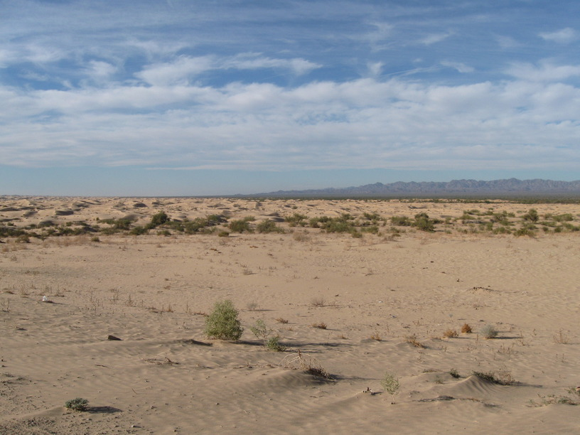
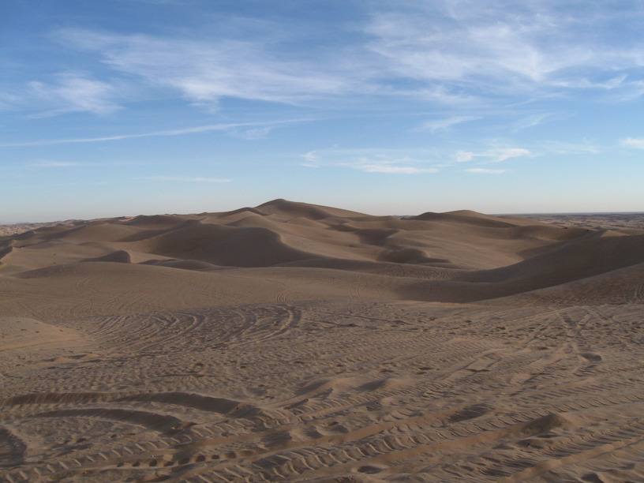
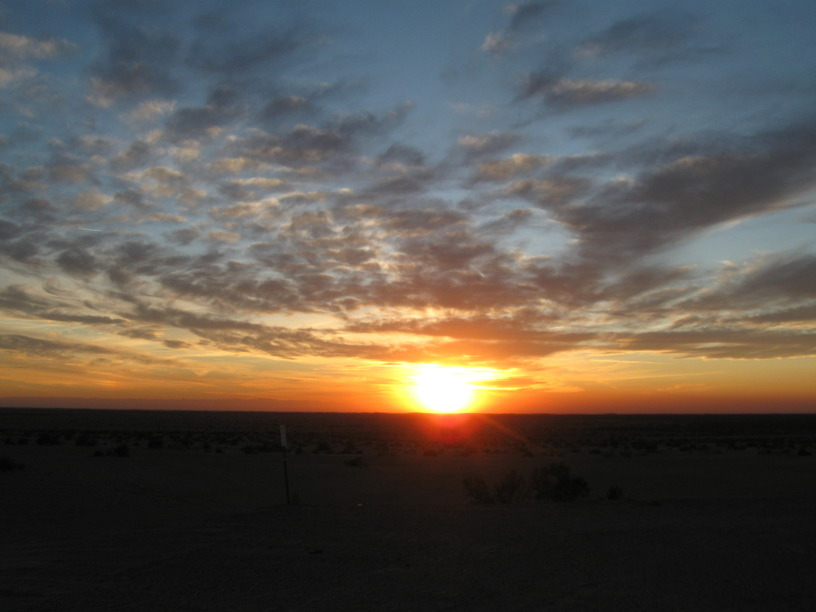
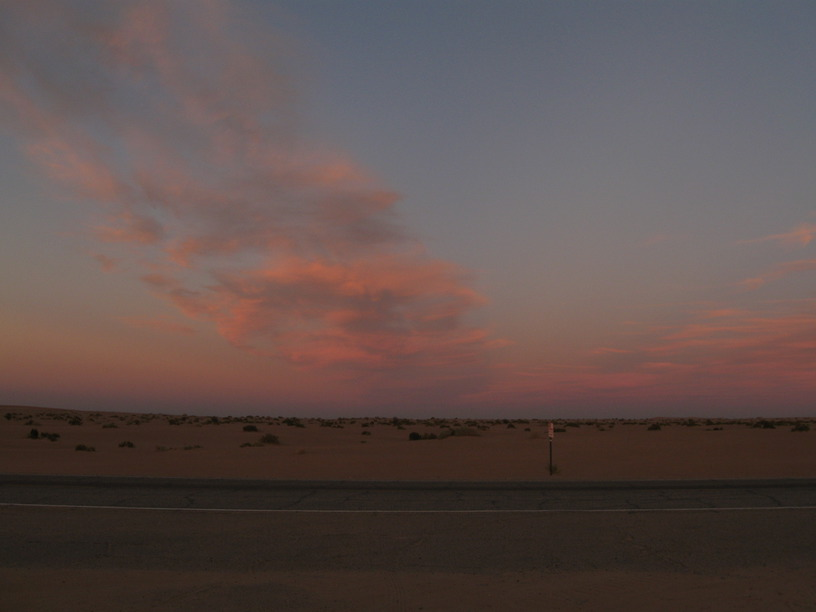
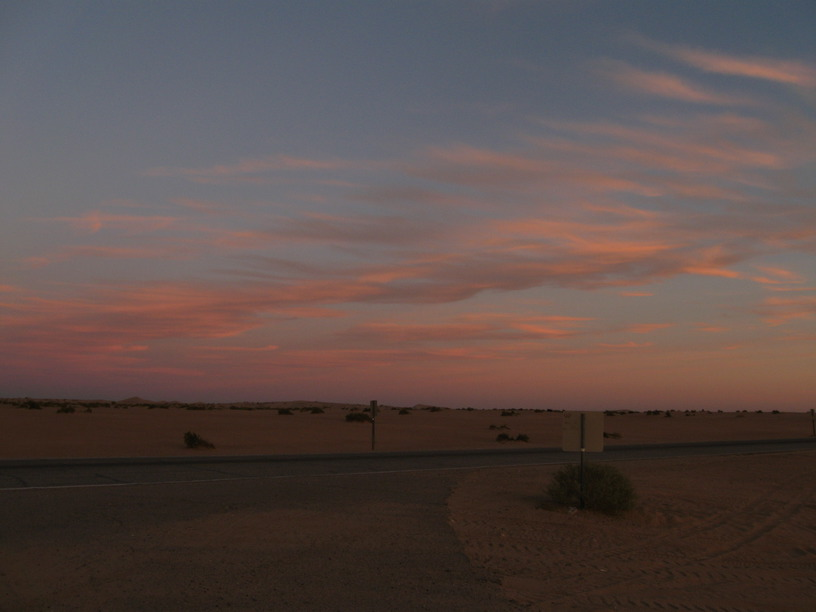